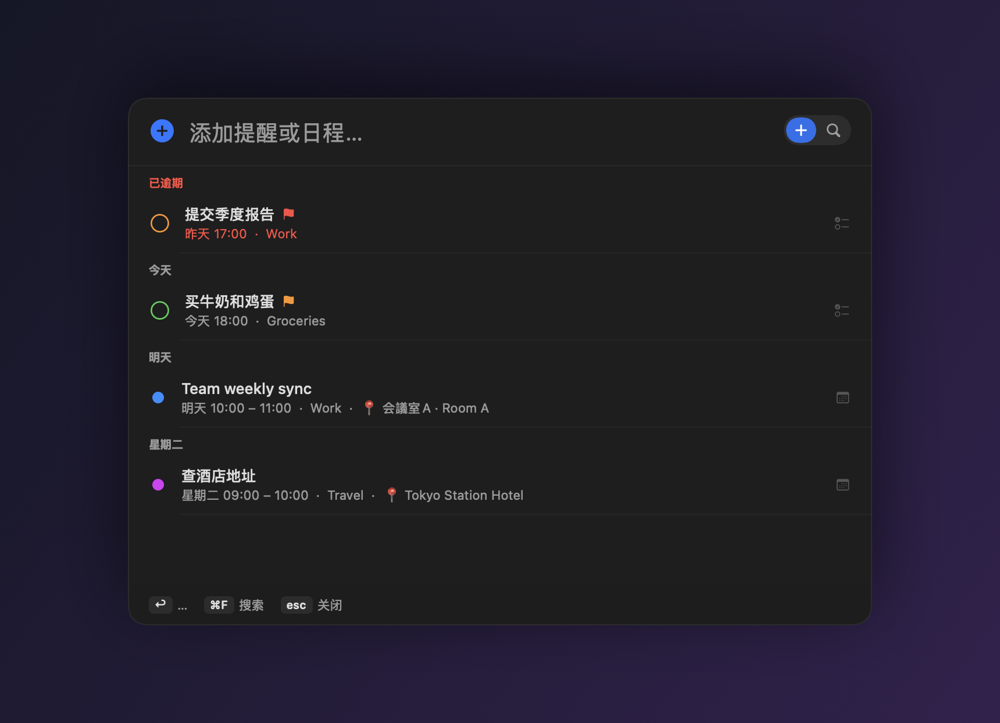
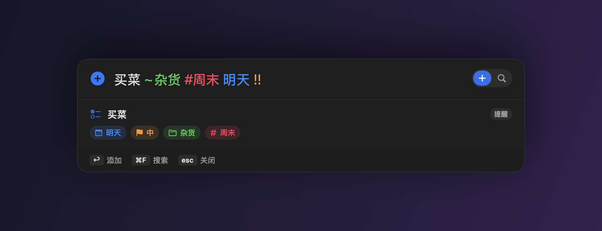
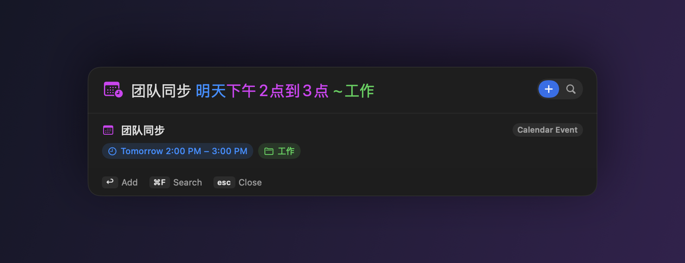
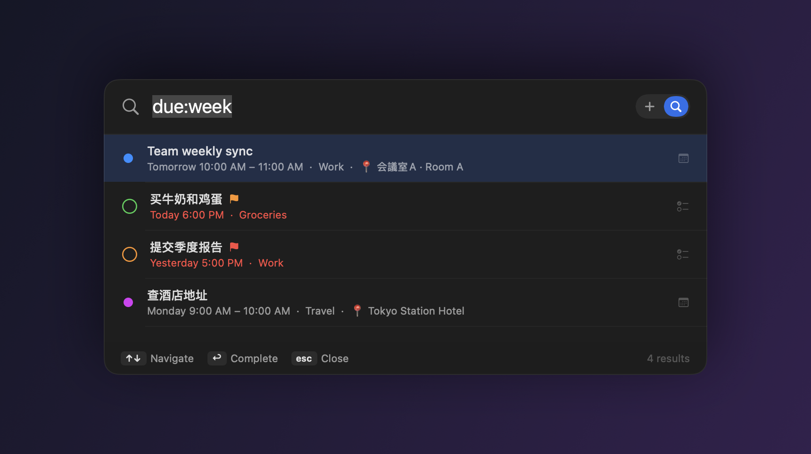

免费、开源的 macOS 菜单栏 App。在任何界面按 ⇧⌘A，逾期 / 今天 / 最近几天的事 立刻在眼前；再像说话一样打字，就把提醒或日历事件建好——时间、地点、优先级、重复都自动填好。

⇧⌘A 打开即是你的日程——逾期、今天、最近几天，按日期分组。任意一条都能就地完成或改期，想加新的就直接打字。
有时间段或时长 → 事件；有地点或会议关键词 → 事件；其余都是提醒。
| 明天下午3点 开会 30min | → 日历事件，15:00–15:30 |
| 周五 9点-10点 团队会议 | → 带时间段的事件 |
| 客户会议 明天下午3点 建国路88号 | → 事件，地址 → 地点 📍 |
| 买菜 ~杂货 #周末 !! | → 高优先级提醒，带清单和标签 |
| 每周一 上午10点 周会 | → 每周重复的提醒 |


面板打开就显示逾期、今天、最近几天的事，按日期分组——打字之前先看清接下来要做什么。
Spotlight 式面板浮在任何 App 之上（快捷键可自定义），用完自动把焦点还给你。
时间、时长、区间、重复、提前提醒、优先级、地点——从你打字的方式里直接解析。
知道"在某地址开会"是事件，并自动把地址提取成地点。
每天/每周/每月、多个星期几（每周一三五），以及 共10次、到周五 等结束条件。
「今天」一览 + 跨提醒和日历的统一搜索（is:event due:week），可就地改期或完成。
加错了？⌘Z。粘贴一个清单，用 ⌥↩ 一次性逐行添加。
全部在本地。可选开启端侧 Apple Intelligence 精修——什么都不外传。
